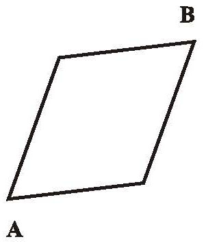
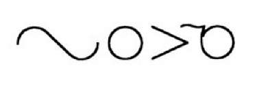
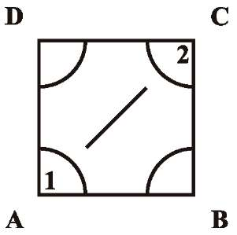

Беседа 2481 от 3877 · Беинса Дуно
Лесният и мъчният път
"Добрата молитва"
Ще прочета част от девета глава от Евангелието на Марка, от четиринадесети до тридесети стих.
В света има много мъчнотии, които не можете да ги премахнете. Случват се. Тези ученици искаха да премахнат една мъчнотия, но не можаха. Те питаха коя е причината. Христос им каза, че тази мъчнотия може да се премахне с пост и с молитва. Дават се условия. Сега по видимому двама хора вярват. И двамата може да имат знания. Знанието седи в изучаване на един порядък, който е установен. Значи този порядък е направен. Той обуславя хората. Казвате, пътищата Божии, това са закони, които все се изучават. Значи неизследими са Божиите пътища, трябва да се изследват. Когато четете Писанието, трябва да се следват Божиите пътища. Трябва да се изучават Божиите пътища и начините, по които трябва да се прилагат. Имате време.
Онези от вас, които сте се занимавали с хлебарство, месене на хляб, знаете какъв е порядъкът. Най-първо житото трябва да се смели. Трябва някой воденичар и след туй вкъщи трябва да знаете как да направите хляба. Най-първо вие ще направите нощви, ще отсеете брашното. И там имате известни правила, на единия край на нощвите какво ще турите. Ще вземете кваса, ще турите брашното, ще турите вода. Туряте брашно, пак вода, ще направите тестото. После това тесто правите на сомуни, които туряте в пещта и ги опичате. Сега може да дойде някой философ и да каже: „По друг начин не може ли да стане хлябът?“ Той е станал веднъж, природата го направила на малки сомунчета, дребни семенца. Вие не сте доволни от тях, вземате тия сомунчета по някой път, че ги счуквате, туряте вода - варено жито правите.
То е известен порядък, който трябва да изучавате. Вие искате да изучавате езика. Той си има известни правила, има известна азбука на български, трябва да изучавате буквите, после има известни граматически правила. После всеки език си има фонетика, начин за произношение. Може някой да каже, че това е лесна работа. То лесните работи са мъчни. Защото не само трябва да произнесеш една дума, но трябва да знаеш и да я напишеш. Запример вземете думата „почва“ на български. Тя еднозначеща дума ли е? Почва значи това, в което се сее нещо, но почва значи и нещо, което начева. Значи има два смисъла. Едното показва земя, в която вие трябва да сеете нещо, другото означава действие, някакъв глагол, работа показва. Почвам сега. Ако е почва, сееш жито, царевица, зеле, какво не. Ако не е почва, какво ще сеете? Може да почва нещо. Казвам: „Почва любовта.“ Любовта е семе, което се сее с туй, което почва. Казва: „Почва любовта.“ Вземете думата „йстина“. Ако измените ударението в български, думата „йстина“ става „истйна“. Може да напишеш думата „истина“, и като измениш ударението, съвършено се изменя думата. Значи езикът не е доста богат. Една и съща дума с изменение на ударението в единия случай значи йстина, в другия истйна. Каква грамадна разлика има между „йстина“ и „истйна“. Де е ударението в единия и в другия случай? Какво означава „йстина“ и „истйна“? Кое е право? Едното дава живот, другото смразява живота. Това са етимологически работи.
Има закон на мисълта. Човек трябва да се научи правилно да мисли. Човек не може правилно да мисли, докато не тури в хармония своите мисли и чувства. Ако той не е господар на чувствата си, ако той не е господар на мислите си, той не може да мисли. Другите хора мислят. Мислиш едно, мислиш друго, но няма пластичност в мисълта ти. Защото може да мислите, тъй както цъфтят дърветата, без да дадат плод, може да растете. Но ние подразбираме под мисълта тя да има своя плод. Сега една такава тема всеки може да развие. Има томове писани, какво нещо е мисълта на човека. Обяснили са, но много пъти тия обяснения нямат приложение. Понеже хората, които са писали върху мисълта, искат да установят известни правила, схващания да видоизменят. Пък законът на мисълта не може да се видоизмени. Понеже той е по-висш свят, установен свят, ти него не можеш да видоизмениш. Ти трябва да го представиш такъв, какъвто е.
Сега нямаш правилна мисъл, не можеш да чувстваш правилно, не може и да постъпваш правилно. Ако не постъпваш правилно, не може да чувстваш добре, не може и да мислиш правилно. Ако не чувстваш правилно, не може да мислиш правилно, не може и да постъпваш правилно. За да постъпваш правилно, трябва да мислиш правилно и да чувстваш правилно. Ако тия работи не ги туриш, ти не можеш да имаш никакви резултати. За да се прояви едно чувство, мисълта е едно условие. Казваш: да си прояви чувствата. Има закон, по който чувствата може да се проявят. Чувството е като семе, което трябва да посееш, да израсне, да даде своя плод. Ако посееш твоето чувство на една почва неблагоприятна, може би ще останеш разочарован. Много пъти ние сме разочаровани от нашите чувства, разочаровани сме от нашите постъпки, разочаровани сме от нашите мисли. Защо? Понеже не сме спазили ония правила, които са необходими. Сега някой ще каже: трябва да се спазят. Как ще ги спазиш, като не знаеш? Или как ще ги приложиш, ако не си учен?
Сега навлизаме в една нова област. Вие всички имате установени възгледи и много мъчно е да се отучите от един стар навик. Имаш навик, останал от дядо ти, баба ти, да се почесваш отзад на главата. Като дойде някаква мисъл, току се почешеш зад главата. Но представете си, че има един издаден закон, че всеки, който се почесва зад тила, изгубва делото. Ти в съда имаш някакво дело, и стражар има, и прокурор има, и съдия. Ти се почешеш отзад по главата и изгубиш делото. Защо? Просто защото си се почесал по главата. Казва: „Какво има от едно почесване?“ Какво има? Да изясня мисълта си, малко е отвлечена. Какво има в едно почесване, вие не му давате никаква цена. Добре. Ти имаш кибритена клечка и при тебе имаш десет кила барут, ти само драснеш клечката и туриш до барута. Казваш: „Какво има, турих само една клечка.“ И веднага цялата къща и вие, всичко иде. Не се пали клечка кибрит при десет килограма барут. Клечката трябва да бъде в кутията си и ти трябва да се откажеш от желанието си да палиш клечката, да опитваш. В дадения случай човек не е просто същество. В него има взривни сили. Някой път само една дума ти кажат и ти кипнеш. Една дума дойде до ухото и стане цял взрив. Питам: такъв един човек какво може да направи в света? Имате врагове и всякога тия врагове може да ви причинят повреда.
Сега вие мислите, че сте господари в света и може да правите, каквото искате. Трябва да се освободите от едно тайно общество. Всички хора са роби на тайни побужде-ния и похождения. Допуснете, че един от вашите врагове турил една примка в главата. Турил ви една мисъл, че вие трябва да бъдете добре облечени. Да имате хубави обуща, хубава шапка, за да имат добро мнение хората за вас. Идеята е намясто. Но нямате пари. За да се реализира вашата идея, трябват ви пет хиляди лева. Най-после, този ваш благожелател, когото вие не виждате, който ви дава наставление, посочва един богат човек банкерин, от когото може да заемете. Отивате при банкерина да искате пари, но този ваш приятел вече му е казал. Този човек обича да кръшка като риба, ти го хвани добре, ще го обвържеш хубаво, вземи му полица, да го вържеш да не си играе, да не те играе. Ти отиваш при банкера, но той те обвързва хубаво и ти вземаш пет хиляди лева. Той те условил след три месеца да върнеш парите, да ги платиш. Той ти турил 25 процента. И ти си казал на този банкерин, че след три месеца ще ги върнеш, защото ти имаш да вземаш пет хиляди лева от някого. Този ваш приятел, който ви турил в ума, че трябва да бъдете хубаво облечен, той отива при този, от когото имаш да взимаш и казва: „Не му ги давай, той си има пари.“ Пък ти си обещал на онзи банкерин, че след три месеца ще ги върнеш парите. Ако не устоиш - глоба. И ти сега, който искаш да си купиш едни хубави дрехи, едни хубави обуща и шапка, за да имаш уважението на хората с тия хубави дрехи, ставаш безчестен, оплитат се работите.
Та много от нашите идеи са смешни. Някой ще иде в училището, да се повдигне пред хората. Но неговото знание може да те излъже. Има един свят на долапчии[18], най-големите долапчии в света, които тепърва трябва да учите. Такива долапчии, че трябва още хиляди години, за да може да изучите ерменските[19] им долапи. Хиляда години ви трябват, за да се осведомите с изкуствените долапи, които те правят. И Писанието казва: големи са долапчиите на дявола. Сега седите и питате откъде са тия нещастия в света, които ви сполетяват. Откъде? От тази област. Тази област, в която сте нагазили, вие сте се разпасали, мислите, опасна работа е. Трябва да бъдете въоръжени, че когато ви атакува вашият неприятел, не само така, но с всичкото знание, което има. Вие сега може да се заблуждавате и казвате: „Господ нас ще ни пази.“ Не, вие разбирате ли какво нещо е? И Христос, един от Великите учители, не казваше тъй, ами всяка вечер по четири-пет часа трябваше да се моли, да бъде във връзка, за да може да противостои на тия противоречия в живота. Вечерно време вие се изтягате на леглото, без дори да се помолите. Ако си православен, ще направиш едно махане на ръката, ако си окултист, ще кажеш една формула: „Бог е Любов.“ Но не върви само с „Бог е Любов“. Или четеш „Добрата молитва“. Ама не върви само с „Добрата Молитва“. Четеш „Отче наш“. Ама не върви само с „Отче наш“. Не че молитвата не е силна, но не върви.
Сега, когато казвам, че не върви, ето аз какво подразбирам. Ако ти носиш един хляб под мишницата, носиш го под дясната мишница, после под лявата. От това, че го носиш, нищо няма да те ползва. Ти четеш „Отче наш“ - носиш хляба под дясната мишница. Четеш пак - носиш хляба под лявата мишница. Така не върви. Какво се изисква? Тази работа с местене на хляба от дясната на лявата мишница, от едно място на друго, не става. Трябва да се яде този хляб, трябва да дъвчеш и то ще дъвчеш по всичките правила. Само по този начин може да извадиш ония сокове, които може да те ползват. Така чети „Отче наш“. Ами четеш „Отче наш“, хлябът е в торбата. Ти като кажеш „Отче наш“, извадиш хляба от торбата, туриш го на трапезата. Четеш „Отче наш“, ти сдъвчеш хляба, туриш го в онази запасната торба и след като се наядеш, ще кажеш „Отче наш“, туриш хляба в свещената торба. Благослови този хляб да израсне. Колко пъти ти четеш „Отче наш“? Един път „Отче наш“, да извадиш хляба от торбата и да го туриш на трапезата. „Отче наш“, да се научиш как да ядеш. И като влезе в свещената торба, да се помолиш пак „Отче наш“ и този хляб да възрасне в тебе. Туй е обновяване. Туй показва пътищата и законите. Всяка една мисъл, всяко едно чувство, което ти имаш, ако не го прекараш през тия процеси, не можеш да имаш един завършен резултат.
Във вас всички имате желание, търсите лесните пътища на живота. Всичките хора се различават с една голяма слабост, че всеки търси лесния път. Най-лесният път е най-мъчният път. Най-мъчният път е най-лесният път. Който разбира. Ако ти искаш да сполучиш в живота, търси най-мъчния път, за да намериш лесния. В мъчния път няма да намериш препятствия, понеже малцина ходят, сво-бодно ще минеш. В лесните пътища става гъмжавица, ти ще изгубиш време. В мъчните пътища - пътят е отворен там. Най-първо вие мислите, че в света има лесни пътища. То по човешки е така. Лесният път е разумен път. Вие търсите пътища, дето не са разумни. Вие искате един живот, дето да няма мъчнотии, да не мислите много, да не се трудите много, като легнете, да не ви безпокои никой, всичко да ви е наредено, да имате слуги. Хубави работи са тия. Хубаво, ако вие имате двама-трима слуги, ако за вас е добре, лесно отива, ами за слугите как е? В света, който Бог създал, хората едни други се ползват. Всички хора не са на едно стъпало.
Да ви задам сега една тема да напишете: „Пътят на един слуга“. Или „Пътят на ученика“. Пътят на слугата какъв е? Аз ви говоря за неща, които са понятни, но трябва да имате ясна представа. Вие сте изучавали теоретически нещата. Запример теоретически знаете за червения цвят, за портокаления, за зеления, за синия, ясносиния, виолетовия и т.н. Някои от вас знаете да боядисвате, но не можете да употребите тези цветове, да се лекувате. Вие имате едно неразположение, вие може да го боядисате. Имате едно неразположение, което е неприятно. То е неприятно, понеже няма хас[20] боя. Боядисайте това неразположение. Ти ще знаеш какъв цвят да му туриш в даден случай. Не си доволен от живота. Имаш дреха, но не си доволен от дрехата, платът е хубав, но цветът не ти харесва. Някой път може да ти хареса цветът, пък като пипнеш плата, той не ти харесва. Казвам, всяка една наша мисъл има цвят. Хубавият цвят показва цената на нещата. Цветът винаги определя цената на нещата. Всеки един цвят определя цената. От Божествения цвят зависи цената.
Мисля, един сръбски учен, един професор, който изучавал инфрачервените лъчи и намира, че са много силни. С тия инфрачервени лъчи едно запечатано писмо може да се прочете. Едно писмо, затворено в плик, с тази светлина може да се прочете, без да се разпечата. Туй, което е невидимо, което е скрито, става видимо. Скрити работи някъде може да се отпечатат. Вие искате по някой път да прозрете във вашата съдба. Че как ще прозрете тъй? Виж този човек, турил инфрачервените лъчи и с тях разкрива известни тайни, отпечатва. Той правил своите опити, демонстрации. Вие искате да проникнете в съдбата, в бъдещето. Трябва да имате светлина. С каква светлина разполагате? Казвате, дарба да ви даде Господ. Съвсем механически разбирате. Такова нещо в света няма. Дарбата не е като брашно, което може да се тури в един чувал. Тя не е нещо, което може да се напише. Една дарба, най-първо, за да се даде, ти трябва да имаш, най-първо, обич към нея. Ти трябва да имаш стремеж към нея, да я възприемеш. После, тази дарба след като възприемеш, да имаш желание да й дадеш широк простор да се прояви. Ако нямаш обич към дарбата и ако нямаш желание да я възприемеш, и ако нямаш желание да й дадеш свобода, тази дарба не може да се прояви у тебе. Те са три фази.
Та казвам сега: „почва“, „любов“, „истина“. Какво разбирате? Ако ви кажа сега: изпейте „почва“, как ще я изпеете? Как ще изпеете глагола „почва“? Как ще изпеете „любов“, как ще изпеете „истина“? Аз на „почва“ бих дал един тон, на „любовта“ - два тона, на „истината“ - три тона. Едно, две, три - всичко шест. Шест тона, кои са тия тонове? С кой тон трябва да започнете? На „почва“ - един тон, на „любов“ - два тона и на „истина“ - три тона. Кои тонове сега трябва да турим? Когато дойдем до музиката, ние трябва да изучаваме тази музика. Вие говорите за музика. Ти окултната музика не може да изучаваш, докато не си изучил обикновената музика. С хиляди години хората са се трудили. Ако тази музика не я знаеш, до окултна ни най-малко не може да дойдеш. Тази музика е предговор на окултната музика за нейното разбиране. Окултната музика не отхвърля сегашната музика. Тя допълня, обяснява. Един Божествен живот не отхвърля сегашния живот, той осмисля сегашния живот. Някои казват, че Божественият живот като дойде, сегашният живот нас не ни трябва. Не така. Така е за онези, които не знаят. Божествената любов, Божественият живот осмислят земния живот. Защото земният живот, и той е Божествен. Не е Божествен, понеже не е разбран, както трябва. Не се прилага, както трябва, неразбран е. Трябва да се премахне неразбраното в живота. Не е лошото в светския живот. В неразбраното в живота е погрешката. И в духовния живот има неразбиране. Казва, този духовен живот не струва. Не е там. Неразбраното е там.
Сега вие ще кажете: какво да правим ние? Всеки може да ви каже, че всеки от вас не живее добре. Така не се говори. Ние живеем неразбрано, не че не живеем добре. Какво значи да се живее добре? Неразбрана идея е. Ами доброто, то е земният живот. Доброто е основа на земния живот. Не живеем добре, значи земният живот не е използван, както трябва. На земния живот какво трябва да правиш? На земния живот четеш „Отче наш“, да извадиш хляба от торбата и ще го туриш на трапезата. След като се помолиш, ще го туриш в торбата вътре. От външната торба ще го извадиш и ще го туриш във вътрешната торба. Или да ви направя един превод. Ще извадиш житото от хамбаря и ще го посееш на нивата. В хамбаря колкото и години да седи, то е безплодно, то не може да принесе плод, то не е капитал, който може да принесе полза. Ако житото посееш на нивата, туй жито може вече да се увеличи. Да кажем, всяка една мисъл, всяко едно желание може да се увеличи. Ако едно желание влезе в човешкото сърце, се увеличава. Мисъл, която влезе в човешкия ум, се увеличава. Постъпка, която влезе в човешката воля, се увеличава, расте.
Сега остава една мъчнотия: как да го приложим? Вие намирате, че приложението е много трудна работа. Най-лесната работа е приложението. Какво ти коства да приложиш едно правило? В граматиката има едно правило да се туря запетая. Имате едно предложение[21], което не е завършено, туряте запетая, тя е най-малката спирка. Тя е една малка спирка, не гара. Запетаята - ще се спреш малко. След туй в българския има точка и запетая. Тя е по-голяма гара. Точката е вече голяма гара, като софийската. Оттам тръгвате за Белград. Софийската гара е точка, Белград е точка. Тия станции са големи периоди. Онези другите гари са запетаи, точки и запетаи. Това е само за изяснение на нещата.
Казвате: как да приложим това правило? Туй правило няма да го измисляш, ще вземеш граматика. Често, като пишат по английски, туря запетая, а на български турят точка и запетая. Българинът има повече време, затова туря точка и запетая. Англичанинът туря запетая, понеже той казва: времето е пари. Англичанинът няма време да туря точка, туря една запетая и свършва се. Най-после тури точка и се спре. Може да е така. Тази е една от причините, понеже англичанинът е много практичен, може би на това се дължи - тяхната граматика е много опростотворена. Като дойдете до славянските езици, после гръцкия, латинския, тия падежи, тия сложни времена - това са хора, които разполагат с много време. Вземете еврейския език, той има две времена - минало и бъдеще, никакво настояще няма. Евреинът настояще време няма. Казва, всяко нещо, което ти казваш, е минало. Евреинът настояще не мисли. Евреинът мисли за миналото и за бъдещето. Ние мислим и за настояще. Питам, от какво произтича това? От характера, от онова психологическо разбиране, което евреинът има. Той цени времето. Евреите от толкова хиляди години, те имат отлично понятие за времето. У един евреин времето е много хубаво развито у него. Той взел, тия граници разточил във вечността: бъдещето е някъде далеч, миналото е някъде далеч. Туй време той го разделил, макар че няма настояще в него - пак той знае. Евреинът знае бъдещето колко се приближава и кога се приближава; евреинът разбира миналото колко се отдалечило. Две времена има той, минало и бъдеще. Но той разбира миналото и бъдещето много добре. Ние имаме и бъдеще, и настояще, и минало и не сме толкова запознати с бъдещето, не го знаем колко близо е. Пък и настоящето не го знаем колко е настояще. Сега кой е прав? Евреите не са прави. Аз считам настоящето, когато един въпрос от вечността, от бъдещето, минава в миналото. Докато ми е тази преходна форма, е настояще. Настоящето е един момент, в който бъдещето се трансформира на минало. Или житото, което взимаш от хамбаря, то е бъдещето. След като посееш, този момент, като хвърляш житото на земята, то е настояще. А като падне на земята, то е минало вече. Минало настояще. Тогава казвам, трябва да има бъдеще настояще и минало настояще. Какво разбирате вие под минало настояще и бъдеще настояще? Бъдеще настояще - изваждаш житото от хамбаря, туряш го в тенджерата да го вариш. То е бъдеще настояще, ти го очакваш. Като го ядеш вече, като го туриш в торбата, то е минало настояще. Аз разбирам процеса. Ако вие не разбирате, в еврейски не можеш да изясниш. В еврейски език има неща, които са неясни. Затова Евангелието не може да се пише на еврейски език. Еврейският език няма пластичност, не изразява, не изказва новите форми, в които мислите Христови можаха да се турят. Гръцкият език имаше по-голяма пластичност. Много архаичен език, много отрязан е еврейският език. Тогава можаха да пишат стари пророчески работи, но като дойдем до онази любовна мисъл на християнството, на еврейски език не може да се пише. Пък и на български език не може да се пише. Трябва да се създаде един нов език. Че не можем да приложим любовта, причина е езикът. Нямаме форми.
Та в сегашния живот новата култура, която иде, трябва да се създаде съответстващи езикови нови форми, за да бъде умът пластичен. Езикът трябва да е пластичен, за да може да се изрази Божествената мисъл на Божествен език. Онзи език, от който е зает човешкият език, е толкова пластичен, че само едно значение имат думите. Езикът е толкова богат, че за всяка идея имат своя форма. Когато тук за много идеи туряме под една и съща форма. Не можем да правим различие. Не можем да правим различие между обич и любов.

Трябва да се учим. Всичко друго на земята, че трябва учебници, че трябва другари, стая - те са второстепенни неща. Най-първо трябва да разберете, че вие трябва да учите. Да учите каква е волята Божия, какви са Неговите закони. Господ ви даде красив ум, дал ви красиво сърце, дал ви красива душа, дал ви и красив дух. Има какво да учите. Вие седите и мислите за шапката, за дрехи. Те са лоши работи, но шапката за кого е? Снощи дойдоха двама души, посетиха ме и им дадох една идея. И на вас ще я дам. Някой, като му направят хубави дрехи, хареса ги. Казвам, човек прави нови дрехи, облича се за хората, а е гол за себе си. Ти, когато искаш да се запознаеш със се бе си, ще хвърлиш дрехите; когато искаш да се покажеш на хората, ще се облечеш. Хубавите дрехи са за хората, а голотата е за човека. Тъй щото своята голота няма да показваш на хората, понеже голотата е за тебе. То е дреха. Гол да си за тебе. Гол какво разбирате?

(Учителят пее.) „Почва“ - „сол“. „Любов“ - имате „до“, „ре“. „Истина“ - имате три тона: „ми“, „фа“, „сол“. Най-първо, за да ти върви в света, трябва, най-първо, да знаеш как да се тонираш. Не може човек да се тонира, който постоянно мисли за своето добро. За да се тонирате, за да се избавите от всичките ваши нещастия, вие трябва да се освободите от вашата крива философия. Най-пър-во, като станете сутрин, мислете за доброто на другите хора. Защото, като мислиш за доброто на другите хора, твоето добро се включва в тяхното добро. Ти мисли за тяхното добро, Господ да помисли за твоето. Господ мисли за доброто на всички. Ние, като мислим за себе си, вземаме Божията работа. Казва: „Аз трябва да мисля за себе си.“ Сега разбирайте: мислете за доброто на другите хора, Господ в тебе да мисли за твоето добро. Ти стани проводник на онова добро, което Господ мисли да прави навън, и тогава кажи: „Доброто, което Бог вложил в мене, туй добро желая да бъде за моите ближни, за моите братя, за моите сестри, туй добро Бог да го даде на тях.“ Тогава имате превръщане, имате същия закон: А и В. То е за тониране. Ти си неразположен духом, казваш: „Не ми върви.“ За да ти върви, прояви доброто в тебе. Туй добро, което Бог турил, проектирай го навън, тури го в обръщение Божия капитал. Вие седнете и се молите, казвате: „Господи, да изпратиш Духа Си, да ме одариш.“ Тя е крива молитва. Няма какво Господ да те одарява. Казва: „Той дал Духа Си.“ На апостолите Бог даде Духа Си, за да възрасте онова, което е в човешката душа. Ще изпрати Духа Си и този Дух, като дойде, е като светлината, да възрасте онова, което е вложил Бог, Който създал човек, Той вложил Своето благо. Но понеже човек не е бил силен, не е работил за възрастването, сега трябва да дойде Духът - трябва да дойдат разумни същества, да му помогнат, да му покажат скритите работи, които са в него и по кой начин той може да го разработи. Духът като дойде, ще започне да те учи как трябва онова, което е в Него... Целия живот изгубвате в противоречия. Ставаш сутрин и казваш: „Не съм разположен духом.“ Чакаш час, два, три, четири, пет, целия ден не си разположен. Че защо не си разположен? Не си разположен, понеже някое същество дошло и турило един бръмбар в ума ти, че трябва да имаш нова шапка, нови дрехи. И там има един банкерин, от който може да вземеш пет хиляди лева на заем, да направиш дрехите. Тъй е сега горе-долу. Извърши волята Божия, тогава си прави новите дрехи. Кога се обличате добре? Вие отивате при Господа облечени. На църква всички отиват да се молят хубаво облечени. Хубаво е това, но ние започваме по кривия път. Аз, като отивам при Господа, ще се облека в своята мисъл, ще се облека в своята права мисъл, ще се облека в своето право чувство, ще се облека в своята права постъпка. Тогава, след като се моля на Господа, молитвата е приета. Ще се върна тогава да туря новата шапка, новите дрехи, то е второ обличане. Най-първо при Господа ще се облека, работата ми е уредена. И тогава ще се облека за света. Ще туриш бомбе или самурен калпак, ако е мъжка шапка, или ако е женска - с перо. Може да турите каквото искате, каквито искате цветове, каквито дрехи искате. Те са хубави, ако си ходил при Господа. Тогава успешно обличаш новите дрехи. Може да си турите каквито искате неща, нищо не значи. То са обикновени дрехи. Райската птица има най-хубавите дрехи, които струват двайсет и пет милиона. Една райска птица струва двайсет и пет милиона. Аз съм правил своите изчисления тъй да се боядисат - хас боя. Когато имате някоя дреха, ще бъде така хубава, с огърлица със скъпоценни камъни, че като погледнете, навсякъде ще ви е приятно. Та сега, както учат хората, че вие трябва да се облечете скромно. Вие отвън не сте облечени, и отвътре не сте облечени, че никъде ви няма - ни на небето, ни на земята. Та туй не е философия. Противоречието де седи? Че вие трябва да се облечете много хубаво. Най-първо ще започнем с обличането отвътре. Мисля, не се изискват векове, в един може да стане. Всеки от вас за една седмица, за един месец може да стане. За цял живот може да стане. Но всеки ден може да стане. Този е въпросът - какво трябва да се прави? Да се облечем. Сутрин, като станеш, ще се облечеш със своите добри мисли, ще се облечеш със своите добри чувства, ще се облечеш със своите добри постъпки и ще се явиш при Господа. Ако Той одобри твоите мисли, твоите чувства и твоите постъпки, ти ще се върнеш, ще се облечеш с най-хубавите дрехи, които имаш. Ние седим и казваме, че сме остарели, че сме закъсали. Защо остаряваме? Ами че вие сте турили целия свят да носите на гърба си, как няма да остарявате? Дойдеш и мислиш, че си се родил баща, майка. Това живот ли е? Вие имате криви идеи за баща си и за майка си. След туй имате криви идеи как ще се осигури вашият живот, имате криви идеи за нещата. После мислите, ще имате ли прехраната на един чиновник. След туй искаш да се ожениш и мислиш каква ще бъде тази, за която ще се ожениш, ще може ли да живееш, после деца ще имаш ли, как ще ги възпиташ, пари ще ти трябват, ред безпокойства от единия край до другия. Ще се безпокоиш за децата, които нямаш, ще се безпокоиш за възлюблената, която нямаш. Че защо ти е възлюблена, за която трябва да се безпокоиш? Като отиваш при Господа, се безпокоиш дали Господ ще ме обича, или не, дали ще ме подари с нещо. То е крива идея, твое заблуждение. Твоят възлюблен не се нуждае от нищо, той всичко има. Той иска ти, като отидеш при него, да бъдеш добре облечен. Щом мислиш дали ще те обича, или не, ти си на крива посока. Така не се мисли. Това не е живот. Дали щял да ви обича. Дали ме обича, или не, то е съвсем друг въпрос. Може да знаете напълно дали ви обича, или не. Когато обичаш някого, не може да не обича. Ако той не те обича, има други причини. Не може да обичаш, и да не те обичат. Не говори, че не обичаш някого. Ако ти обичаш някого, той не може да не обича, той не може да няма към тебе разположение. Ако ти го обичаш в душата си и желаеш всичкото добро за него, да не мислиш лошо за него, той не може да няма разположение. Ти ще видиш, ще изследваш какви са неговите отношения към тебе. Не, аз гледам какви са неговите отношения към другите, не към мене. Каквито са неговите отношения към другите, такива ще бъдат неговите отношения към мене. Сега не искам да зная какво е вашето знание. Ако е за знание, и аз зная. Не че не е важно. Даже онова, което аз зная, аз го оставям настрана, то е частично схващане, какво аз зная. Две по две е четири. Какво означава това? Има и друго разрешение.

Следователно законът е същият: ако вие служите на Бога, ако вие се определите да Му служите, Бог ще промисли заради вас. Ако вие не Му служите, и Той няма да мисли заради вас. Вие искате, без да Му служите, Той да промисли заради вас. Няма такъв закон. Ако Му служите, непременно Той ще промисли за вас. Най-първо трябва да правите, не да кажеш: „Аз служа на Бога.“ Ето аз какво подразбирам. Представете си, че аз съм беден човек, закъсал съм. Казвам: „Господи, покажи ми един път, как да изляза от тия лошите условия, в които се намирам. Съвсем закъсах, ходих на едно място, не ме приемат, учител исках да стана, това, онова, никъде не ме приемат. Така се случи.“ Господ каза: „Я тръгни там по пътя.“ Виждаш една мома млада, наранена, кръв тече. Господ казва: „Вземи я на гърба си.“ Вземам я, занасям я, връщам нейното съзнание. Случи се, че тя е княжеска дъщеря. Ходила по екскурзия и се случило нещастие. Тя ми даде адреса си и след туй ми благодари за услугата. И оттам насетне всичко ми тръгна напред. Господ казва: „Този е пътят, който ме назначава на служба. Този, който помага.“ Казва: „Много знаеш.“ Ако кажа: „Ще взема младата мома, тя не е за мене, тя се занимава с други работи.“ Господ казва: „Вземи я на гърба си.“ Ти намериш на пътя една свещена идея, Господ казва: „Вземи тази свещена идея.“ Ти кажеш: „Тя не е заради мене, аз не мога.“ Ти затваряш пътя. Ти вземи я на гърба си, занеси я у дома. Тази идея, като живее, ще ти покаже, че е княжеска дъщеря. Оттам насетне твоите работи ще вземат да се оправят.
Какво повече да ви говоря на вас. Вие сега искате да кажете: „Няма ли нещо... нещо пари за дрехи, да си направим, да се облечем?“ Ще дойдат дрехите. Вие сега нямате дрехи, имате доста хубави дрехи.
Как пяхме „почва“, „любов“ и „истина“? Значи работите почват с този устрем. „Почва“ значи движение, да се задържи в тебе една идея. Ти ще възприемеш любовта. Аз ви давам пример: любовта е тази царска дъщеря, която вземаш и занасяш у дома си. Тогава ще дойде истината. Докато любовта не влезе в душата ти, в любовта ти не можеш да разбереш истината. „Почва“, „любов“, „истината“. Любовта е онази дъщеря, която ти вземаш. Истината е резултат, истината е вече път, всичките ония възможности, с които може да се повдигнем. Всеки от вас казва: „Трябва да има амбицията, не, но стремеж да се повдигне.“ Всеки трябва да има желание в своята мисъл, не да се колебаете, но в даден случай да знаете, че вашата мисъл е права. Правата мисъл е права за всички. Една моя права мисъл не е права само заради мене. Моята мисъл е мисъл за всички. Всички хубави мисли на цял свят са и мои мисли. Хубавото във всички е и мое хубаво, хубавото в мене е хубаво за всички. Та благата в света са общи за всичките. Онова, което Бог създал, е за всичките. Трябва нашето съзнание да се разшири, да се разшири и сърцето ни.
Тази работа без свирене няма да стане. (Учителят взема и нагласява цигулката.) В света има един Божествен план, много пъти сте слушали за него, който трябва да се реализира. Няма друг план, ние трябва да реализираме Божия план, не какво ние мислим. Има един Божествен план, който всички същества, които са на служба, искат да го реализират. И ние на земята трябва да го реализираме. Божият план трябва да се реализира. Когато Божият план се реализира, тогава и нашите планове ще се реализират. Ако Божият план се отлага, и нашите планове се отлагат. Най-първо Божият план е наш. Ние искаме най-първо да се реализира нашият план, и после Божият план. Не може да бъде. Вие сега искате вие да бъдете щастливи. Вие и без това сте щастливи. Вие сте от щастливите нещастници. (Учителят свири и пее.) „Почва“, „любов“, „истина“. (Учителят пее)
Почвай работа с права мисъл,
право чувство,
права постъпка.
Там е истината. (два пъти)
Любовта ражда живота,
истината ражда свободата,
почвата ражда житото,
и човек е всякога готов
да си похапне.
Упражнението е това. Това е външната страна на пението. Щом дойде външната страна на пението, трябва да има смисъл. (Учителят свири. Пее)
Сам бях в света.
Станах слуга на Господа.
Той ме прати в гората
да събера гориво за зимата.
Но духна вятър, заваля дъжд и ме окваси,
измокри всичките ми дрехи.
Тръгнах аз назад, без да нося нищо,
и по пътя се оцапах.
Като се върнах в дома,
господарката ми казва:
„Няма да влизаш,
докато отвън не се очистиш.“
Отива хубаво облечен, завалява дъжд, окаля се, не го искат нечист. Който не разбира, казва: „Окалях се.“ Не е въпросът там. Казвам сега, вие сте в гората да събирате гориво, и не събирате гориво.
Учете се да мислите, да чувствате и да постъпвате, да вършите волята Божия. Това е то, хубавото. А може да кажа сега: какво ли ще ме разберат, да им пея. Аз не пея само на вас. Пея на всичките. Като пея, по радиото ме чуха не само тук, чуха ме на другите места, че пях песента, че сам бях в света, станах слуга на Господа.
Казвам сега, да остане в душата ви мисълта да бъдете смели в изпълнението волята Божия. Вършете Неговата воля, за да се уредят вашите работи. Понеже законът е такъв: като вършим волята Божия, ще се свърши и нашата воля. Когато всичките хора се решат да вършат волята Божия, Царството Божие ще дойде на земята. Ние искаме Царството Божие да дойде на земята. Че така ще стане? Като свършим волята Божия. Най-първо всички трябва да се решим да изпълним волята Божия, тогава ще дойде Царството Божие. Като дойде Царството Божие, тогава ще дойде и нашата воля. Понеже всичките като сме разумни, тогава ще стане и нашата воля. Бог ще ви покаже по кой начин ние ще се зарадваме. Като дойде Царството Божие, тогава ще стане и нашата воля, кой каквото иска, ще стане тогава. Когато Царството Божие не е дошло, каквото и да мислите, нищо не може да стане. Туй, което Бог иска, не е станало, че това, което ти искаш, ще стане. Тогава е възможно. Когато дойде пролетта, всички цветя ще цъфнат. Сега трябва цветарник изкуствено. Като дойде пролетта всички цветя ще цъфнат, ще израснат.
Та най-първо, работата за идването на Царството Божие на земята. И като станете сутрин, турете мисълта си: „Да бъде волята Божия.“ Аз не искам да остане мисълта като един морал, аз не поддържам това. За мене моралът е външна страна, за мене са идеите. За мене същественото е онази чистата мисъл, която имам. То е същественото отношение, което се образува между Бога и мене. Важно е онова чистото желание. То е връзката между Бога и мене. За мене моята чиста постъпка ще образува връзката с Божественото. Ти не можеш да направиш една връзка, ако твоята постъпка не е чиста. Връзката с чувствата трябва да бъдат чисти. При Бога не можеш да направиш връзка, ако чувствата не са чисти. Значи в самия себе си тия връзки трябва да бъдат чисти. Не трябва да се безпокоя. Няма какво да се безпокоя, понеже живея в един свят разумен. Като се върна, ако съм се окалял, господарката ще каже: „Очисти се, че тогава влез.“ Вие ще кажете: „Вкъщи не ме искат.“ Не че не ви искат.
„Божията Любов носи пълния живот.“
22 лекция на Общия окултен клас 19 февруари 1936 г., сряда, 5 ч. сутринта
[b]София, Изгрев
[18]Долапчия - лъжец, мошеник (диал.).
[19]Ерменски - арменски, хитър.
[20]Хас - чист, истински (от турски).
[21]Предложение - изречение (руски).